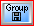

|
MessagePopup II 소개
요구사항
사용법
1 메세지 보내기
2 일정관리
3 알람
4
파일 전송
5 설정
6 IP
7 ETC
문제해결
언어지원
HomePage
Send email
후원하기
|
|
메세지팝업 II
MessagePopup II
는 LAN상에서 메세지 전송을 하는 무료 메신저입니다.
일단 설치만으로 같은
LAN상에 메세지팝업이 설치된 컴퓨터들끼리 통신이 가능합니다.
기본적으로는 메세지 전송을 주로
하고, 파일 한개를 첨부해서 보낼 수 있습니다. 대화명도 바꿀 수 있으며
그룹기능이 추가되어
그룹별로 리스팅할 수도 있습니다.
업무에
편의를 위해 다이어리를 제공해 달력스타일의 다이어리에 업무정리를
할 수 있고, 알람시간을 정해서 알람시간을 알려줍니다.
작은 회사나 사무실에 적합하며 대기업 메신저로는 부적합합니다.
요구사항
OS: windows 95/98/Me/2000/XP/Vista/7/8/10와 이후 Windows (XP 이상 추천)
LAN card : TCP/IP protocol installed
만약 동적 IP를 사용한다면 DHCP서버(공유기에도 포함됨)에 자신의 랜카드 MAC 주소를 고정 IP로 등록해 주세요.
해상도 : 최소 800
X 600, ( 1024 X 768 이상 추천).
윈도우즈 XP 이상의 사용자는 반드시 첫실행시 네트워크 접속 차단해제를 해주어야 합니다.
해제 안하면 사용자 목록 안뜹니다 .
자세한 사항
* 설치시
주의사항 *
이미 설치된 컴퓨터에 업그레이된
버젼이나 재 설치를 할 경우
첨부파일, 설정이나 로그파일들이 삭제되기를
원치 않는다면, 시스템트레이 아이콘 오른클릭-> 종료하기 후,
설치파일을 설치하면 됩니다 (덮어쓰기).
Uninstall,을 하게 되면
모든 로그 설정파일들이 완전삭제됩니다.(복구 불가)
다른
컴퓨터에 이전하려면 일단 새컴퓨터에 설치한 후에 기존 컴퓨터의 C:\Program
Files\MessagePopup방의 모든 파일들을
압축해서 카피한 후
같은 방에 풀어서 덮어 버리면 됩니다. ( 압축 풀 때 덮어쓰지 않고 서브폴더를 만들었는지 확인)
사용 설명서
메세지팝업은 프로그램이 시작시 같은 랜상에 메세지팝업이 설치된
유저들을 자동으로 검색합니다.
또는, 접속자
검색버튼으로 새로 갱신할 때 사용자 검색을 합니다.
메세지를 받게 되면
지정된 소리로 팝업창이 올라옵니다.
프로그램을 종료하려면, 시스템
트레이 (시계옆) 아이콘을 오른클릭한 후 [종료하기]를
선택해서 종료합니다.
메세지팝업창을 핫키로 올리려면 [CTL+SHIFT]를
누릅니다. 한번더 누르면 사라집니다. 활성화 되어있으면
[Esc]키로
내릴 수 있습니다. 또는 윈도우 기본 종료아이콘 클릭.
메세지가 왔을 때
팝업이 되지 않기를 원하면 시스템 트레이 아이콘을 오른클릭한
후 [최소 아이콘화]를 선택하면
팝업되지
않고 최소아이콘창이 깜박입니다.
최소 아이콘도 원치 않으면
[팝업 않기]를 선택하면 시스템 트레이 아이콘만
깜박입니다.
이 메뉴얼을 보려면[F1]
키를 누르거나, 를 클릭하고 Help를 누르세요
개발자 후기:
작은 프로그램이지만 많은 사람들이 유용하게 사용하면 좋겠습니다.
그리고 특별히 그래픽 아이콘에
도움을 준 저의 사랑하는 동생에게 정말 감사하며, 저의 사랑하는
가족과 많은 사용자들과
조언을 아끼지 않는 모든 분들께 감사드립니다.
메세지팝업이 사용하시는 모든 분들의 하시는 일에 조금이나마 도움을
주었으면
합니다. 모든 분들에게 행운을 빌며(^0^)~♣
제작자
박태준 꾸벅 m(_ _)m
메세지
보내기
|
1. 접속자 목록창에서 수신인들을 선택합니다. (Ctrl또는
Shift키로 다중선택가능 , 드래그 선택가능)
또는 엔터키를 누르면, 받는이들목록창에 입력됩니다.
접속자 목록에 나타난 모든이들을 선택하려면,
를 누르거나 오른클릭 후 [모두->받는이목록]
을 선택하면
됩니다.
2. 받는이 목록창 옆에 있는 보내는 글쓰기 창에 글을
쓴 후
3. 또는 [CTL+S]
를 누르면 메세지가 전송됩니다.
|
|
받은 메세지의 보낸이에 답장하려면 을
누르고 글쓴 후 보냅니다.
받은 메세지의
같이 받은이들 모두와 보낸이에 답장하려면
를 선택 후 글쓴 후 보냅니다.
받은들을
다른사람에게 전달하려면 을
선택한 후 글을 적은 후 받는이들을 선택 후 보냅니다.
보내는
글창의 글을 없애고 새글을 적으려면,
또는 [CTL+N]를
선택합니다.
받은 메세지와 보낸
메세지의 최대 저장 수는 30개 입니다
30이상으로
들어오면 가장 오래된 글부터 차례로 자동 삭제됩니다.
30개의
수량을 수정하려면, 설정창
[소리,로그]탭에서 수정가능합니다.
기본적으로
Send 버튼 누른 후 받는이들 목록은 삭제됩니다.
삭제되 는 것을 원치 않으면 를
클릭합니다. 같은 받는 이들과 연속으로 대화 할 때
유용합니다.
프로그램 시작시 이 기능을
기본적으로 사용하려면 , 를
누른 후 [시작 핫키]탭에서
,
[No CLR] 옵션에 체크해 둡니다.
|
|
일정관리
|
1. 클릭.
2. 각각의 날짜를 누르면 글을 입력할 수 있습니다.
(이후 이 글이 있으면 프로그램 시작시
오늘의 글창에 이 내용이 보여집니다)
3. 기념일 입력
[MyDay] 버튼을
눌러서 매해 같은 날 (생일, 각종 제사, 기념일 등)을 입력할
수 있습니다.
|
|
* 휴일도 표시되며 휴일이 바뀔 경우
holiday.txt를 수정하여 주십시요.
(메세지팝업
기본폴더 C:\Program Files\MessagePopup\date\holiday.txt)
음;0000;01;03;테스트날;1; 에서
음
= 음 또는 양
01;03= 01월
03일
테스트날= 날의 명칭
1=
빨강날 (아니면 0)
|
|
알람
|
1. 를
클릭 후 알람시간을 입력하고 + 를 클릭합니다.
2. [소리설정]탭에서
, 소리 파일을 설정하고 소리나는 방식을 선택할
수 있습니다.
3. [인터넷과 컴퓨터시간동기화]탭에서
, 세계 타임 서버를 선택한 후 동기화를 하면 컴퓨터시간을
자동으로 맞춰 줍니다.
|
|
파일 전송
|
1. 받는이들을
선택하고 글을 적습니다.
2. 를
클릭한 후 전송하고자 하는 파일을 선택합니다.
또는 Drag & Drop으로
파일 한개를 메세지팝업 창에 떨어뜨립니다.
3. 파일이 첨부되면 ,
색이 로
변합니다.
( 파일 첨부 취소하려면
하단의 파일명 옆의 [X]버튼으로
취소합니다.)
4. 를
클릭하면 메세지 전송과 함께 파일이 전송됩니다.
5. 받은 파일은 C:\Program Files\MessagePopup\down
에 저장됩니다.
경로를 바꾸려면
다운경로설정 탭에서 변경하세요.
받은 첨부파일 여는
방법
1) [Clip]버튼을
누른 후, [Goto Down DIR]을 누르면
다운방이 열립니다.
2) 또는
보내는 글 창 위의 파란바를 클릭하면 다운방이 열립니다.
3)
또는 보내는 글창에서 오른클릭 후 [Open explorer]를
선택하면 다운방이 열립니다.
4) 또는 받은 글창에서
받은 글에 첨부파일이 있으면 받은글창 위의 파란바를 클릭하면
첨부파일이
실행됩니다. 첨부파일 없으면 다운방이 열립니다.
받은
글창에서 오른클릭 후 [Open explorer]를
선택하면 첨부파일이 열리거나 없으면
다운방이
열립니다.
|
|
Setup
|
네트워크 Tab
|
1. 다른 네트워크
My
Network 와 다른 네트워크의 주소의 사용자들과 통신하기
위해서는 다른 네트워크 앞세자리 주소를 입력합니다.
자신과 같은 네트워크는 적을
필요없음. 기본적으로 검색함.
(메세지
팝업이 인식하는 같은 네트워크는 IP의 앞 세개의 자리를
같은 네트워크로 인식합니다. )
다른
네트워크의 상대방도 내 네트워크를 다른 네트워크 주소에
입력해야 해야 서로 원활한 통신이 가능)
2. 그룹명 , 대화명
그룹명과
대화명을 변경할 수 있습니다.
그룹명은
기본적으로 입력안해도 됩니다.
그룹명을
입력하면 접속자목록창위의 콤보박스에서 그룹명별로 분류가
가능합니다.
3.
통신 그룹
같은 LAN상에 서로 목록창에 보이지
않기 원하는 사용자들이 있을 경우 자신이 원하는 사용자들만
같은 통신 그룹으로 설정해서, 같은
그룹들끼리만 보이게 설정합니다.
기본
그룹은 모두 A 그룹이므로 통신하길 원하는 사람들은 B그룹을 선택하면 B로 설정한 사람들만 보입니다 |
|
색상,폰트
Tab
|
1. 컴목록창(접속자목록과 받는이 목록창)과
글창(받은글과 보낸글창)의 색상과 폰트 색을 바꿀 수 있습니다. .
또는
기본색 1.2.3.4 중 원하는 색을 선택할 수 있습니다.
2. 폰트 크기는 글창의 폰트크기의 설정을 합니다.
3. 폰트언어을 설정합니다.(기본은 Default이며
윈도우즈 기본폰트설정을 이용합니다.)
일반적으로
설정을 요하지 않음
4. 목록창의 폭을 조절한 후 [목록창
폭 저장]
을 누르면 프로그램 시작시 폭크기 저장되어
시작합니다.
또는
접속자 목록창에서 오른클릭 후 [목록창
폭 저장] 을 선택한다.
|
|
소리,로그
Tab
|
1, 메세지가 왔을 때 소리가 안나게 하기 위해 체크박스에
체크하세요
소리를
변경하기 위해서 원하는 소리를 선택하세요
2. 기본적으로 보내고 받는 메세지의 최대 저장 수는
30개입니다. 원하면 그 수를 변경합니다.
3. [로그방으로가기]
or [Find in Log DIR].로
로그파일 방으로 갈수도 있고,
로그파일
중에서 찾는 글을 찾을 수 있습니다.
모든 로그를 삭제하려면 [로그모두삭제를
눌러주세요.
|
|
암호
Tab
|
만일 자신이 자리를
비웠을때 남이 메세지팝업을 클릭해서 바로 볼 우려가 있을
경우 여기서 암호를 설정한 후
시스템
트레이 아이콘 오른클릭 후 [암호
걸기] 를 선택하면 트레이 아이콘을 클릭하면 암호를
묻습니다.
[암호
걸기] 를 해제하려면[암호 걸기]를
한번 더 클릭합니다.
|
*
암호를 잃어버리면, 프로그램을 새로
시작하고 암호를 새로 설정하세요.
|
|
|
시작,
핫키
Tab
|
1. 프로그램 시작 옵션
시작시 최소화,
팝업않기, 최소화 아이콘 기능을 설정할 수 있습니다.
이 기능은 트레이 아이콘 오른클릭 메뉴에서
일시적으로 설정할 수 있으나 시작시 기본동작하게 합니다.
2.핫키 (팝업창 올리고 내리는 키)
핫키기능을
사용 해제할 수도 있고, 키를 변경할 수 있습니다.
3. [No CLR]
버튼을 시작시 작동시킵니다..
4. Enter & Send
보내는
글창에서 글을 쓴 후 엔터키를 쳐서 바로 메세지 전송을
원하면
보내는 글창에서 오른클릭 후 [Enter&Send]. 를
선택합니다..
이 기능을 시작시부터 사용하려면 [시작시 Enter &
Send 작동] 에 체크합니다.
|
|
다운폴더
|
첨부파일 다운로드되는 폴더를 선택합니다
(기본폴더 : MessagePopup folder\down) |
|
IP사용자에게
IP로 직접 보내기
|
1.
클릭. 이 기능은 IP로 상대에
보낼 때 사용합니다. 다른 네트워크에 있는데 다른 네트워크
설정을
할 경우 그 네트워크 모든
사람이 읽혀집니다. 그렇지 않고 해당 사용자만 검색을
원하면 여기에 설정합니다.
해당
IP 유저만 검색합니다.
2. 상대의 IP와 이름 입력합니다.
3. [+] 를 눌러서 리스트를
만들고 리스트에서 선택 후 [선택한 이들을
받는이 목록에 추가] 버튼 누름.
4. IP방식으로 메세지를 받으면 (보낸이 앞에 @가 표시),
[IP] 클릭
후 [->] 를 누르면 해당 IP를 뽑아 냅니다.
|
|
* IP기능은 먼 internet 사용자에게 전송된다는 보장은
없습니다. 인터넷 세상에서 막힐 수도 있습니다.
이 기능은
랜상에 다른 네트워크에 접속할 때 필요시 이용합니다.
|
|
기타 기능
|
1. 접속자
리스트 갱신
사용자가 팝업을
비정상 종료한다든지 윈도우를 강제 전원 종료하거나 랜케이블
뽑힌 상태에서 종료시
리스트가
갱신이 안됩니다. 이 경우 이 버튼을 눌러서 수동으로 현재
리스트를 다시 검색합니다.
2. 
그룹 저장 : 받는이 목록에 있는 이들을 그룹으로 저장.
3.
그룹 호출: 저장된 그룹의 목록을 받는이 목록으로 호출합 니다.
4. 자동
전송: 클릭 후 보낼 글을 적습니다.
메세지를
받으면, 보낸이에게 적혀진 글이 자동으로 전송됩니다.
5.
자리 비움: 이 기능을 설정해 두면, 메세지를 받으면
자리를 비웠다는 메세지를 보낸이에게
자동
전송합니다.
한번 더
클릭하거나 메세지를 전송하게 되면 자동으로 기능이 취소됩니다.
6. 최소 아이콘 :
메세지가
왔을 때 팝업이 되지 않기를 원하면 시스템 트레이
아이콘을 오른클릭한 후 [최소 아이콘화]를
선택하면
팝업되지 않고 최소아이콘창이
깜박입니다.
기어설정에서
시작탭에서 시작시 이 기능을 작동하게 할 수 있습니다.
7. 팝업않기
메세지가
왔을 때 팝업이 되지 않기를 원하고 최소 아이콘도 원치
않으면,
시스템 트레이
아이콘을 오른클릭한 후 [팝업 않기]를
선택하면 메세지가 왔을 때 시스템 트레이 아이콘만 깜박입니다.
6. 원클릭 간단한 메세지 :안녕, 감사 ,Yes, No,
Ok ,잠시 button
8. 나의
메세지 :
자주 사용하는 메세지를
저장해 주었다가 사용할 수 있습니다.
글을
적고 [+] 클릭으로
리스트 작성 후 원하는 글을 더블 클릭하면 보내는 글창에
입력됩니다.
또는
[선택된글 입력]
을 클릭합니다.
* 1 ~ 9 번 메세지는[CTL
+1] ~ [CTL +9] 키로 보내는 글창에 입력가능합니다.
9. 특수
문자표, 이모티콘 표
특수 문자나
이모티콘을 선택해서 더블클릭하면 보내는 글창에 입력됩 니다.
윈도우에 따라 폰트가 틀려서
특수문자가 표시 안될 수 있음.
10.
컴이름 찾기
같은
네트워크에 존재하는 컴을 찾아서 사용자 이름을 찾아 받는이에
추가합니다.
11.
현재 메세지 고정
받은 메세지가 길어서
이 글을 읽고 있는데 새 메세지가 들어와서 글이 바뀌는
것을 방지하기 위해
이 버튼을 사용합니다.
12.
보냈던 글의 같이 받은이들에게 글을 보내길 원할때,
이 버튼을 클릭하면
보냈던
글에 있던 같이 받은이들이 받는이 목록으로 입력됩니다.
13. Enter & Send
보내는
글창에서 글을 쓴 후 엔터키를 쳐서 바로 메세지 전송을
원하면
보내는 글창에서 오른클릭 후 [Enter&Send]. 를
선택합니다..
이 기능을 시작시부터 사용하려면 [시작시 Enter &
Send 작동] 에 체크합니다.
14. Open Explorer
보내고
받는 글창에서 오른클릭 메뉴에서[Open
Explorer] 를 선택하면 다운방이 열립니다.
또는 받은글창 위 [파란바] 를
클릭해도 다운방이 열립니다. 첨부파일있으면 첨부파일
열림.
보내는
글창 위 [파란바] 를
클릭해도 다운방이 열립니다.
글 중에
인터넷 주소가 있을 경우 마우스로 긁어서 선택 후 오른클릭 메뉴에서[Open
Explorer]
를 선택하면 인터넷 익스플로러가
주소를 엽니다.
15. 첨부파일 열기
받은들창에서 오른클릭
메뉴에서[첨부파일
열기] 를 선택하면 첨부파일이 있으면 첨부파일이 열리고,
없으면 다운방이 열립니다.
받은글창 위 [파란바] 를
클릭해도 다운방이 열립니다. 첨부파일있으면 첨부파일
열림.
보내는
글창 위 [파란바] 를
클릭해도 다운방이 열립니다.
16. [지구아이콘 ] 을 클릭하면 현재는 메세지팝업 홈으로 이동합니다.
이 주소를 원하는 주소로 바꾸려면
지도 오른 클릭 후 인터넷 주소를 입력합니다.
아무 것도
적지 않으면 클릭시 다운방이 열립니다.
17. 첨부파일 다운폴더 열기
받은 메시지창 위에 [폴더아이콘 ] 을 클릭하면 첨부파일 폴더가 열립니다.
18. 보내는 창에서
오른크릭하면 메뉴에서 단축키 목록이 나옵니다. 이 기능을
사용해서 단축키도 가능합니다.
Key
Summary
[CTL + Shift]Pop Up/ Pop Down
[Ctl + S]
Send
[Ctl + N] New
[Ctl + R]
Reply
[Ctl + L] Reply All
[Ctl +
F] Forward
[Ctl + U] Attach(Upload
File)
[Ctl + 1] - [Ctl + 9]
MyMsg 1 –
9
[Ctl + E] Enter&Send
|
문제 해결
| Network 설정 |
같은 LAN상에 다른 네트워크 (앞 세자리 X.X.X 가 다른
경우)
example>
당신의 컴퓨터A = 10.10.10.2
같은
네트워크 컴퓨터 B = 10.10.10.3
다른 네트워크 컴퓨터
C,D = 10.10.20.3 , 10.10.20.4
다른 네트워크 컴퓨터들S
= 10.10.30.1 ~10.10.30.254
1)먼저 ping 테스트로 통신가능한지를 확인합니다.
도스 command창에서
C:> ping 10.10.20.3
C:> ping 10.10.30.1
를
해서 reply가 오면 통신이 되는 것으로 간주합니다
2) 현재
다른 네트워크가 10.10.20.X 와 10.10.30.X 가 존재합니다.
(1) 이 경우 설정-> 네트워크탭에
다른네트워크주소에 10.10.30 만 입력합니다.
(2)
10.10.20.3과 10.10.20.4 두개만 존재하는 네트워크에 모두
통신할 필요가 없을 경우
또는
10.10.20의 네트워크 주소의 사용자들 모두에게 나의 대화명을
알릴 필요없고 C,D컴에만
알리길
원할경우
->
10.10.20.3 , 10.10.20.4 두개 주소를 입력 후 [+]버튼을
누릅니다.
(3) 설정을 완료 후
를 눌러 접속자 검색을 합니다.
* 물론 10.10.30 도 다른 네트워크 설정에
입력해도 됩니다.
하지만
다른 네트워크 검색을 모두 하기 때문에 시간이 많이 걸립니다.
굳이 10.10.30 네트워크 대에
통신을 원하는 컴이 적을 경우 IP설정만으로
통신이
가능하게 됩니다.
C,와 D의
컴에서는 어떻게 해야 할까요?
다른
네트워크에 10.10.10 과 10.10.30을 모두 적으면 되겠죠
S들은 10.10.10.X는 다른 네트워크에
10.10.20.3 과 10.10.20.4는 IP설정에 넣어주면 됩니다.
여러분의 LAN설정에 맞게 구성하시기 바랍니다.
|
인터넷은 되는데
접속자 목록이
안뜹니다. |
Window XP 이후 버전부터 윈도우 방화벽을 사용합니다.
방화벽은 프로그램이 네트워크 사용하는 것을 차단합니다.
그래서, 메세지 팝업을 사용하려면 방화벽의 개인 네트워크 차단을 해제해야 합니다.
기본적으로 처음 메세지팝업을 설치하면 메세지팝업이 실행되면 보안 네트워크 차단 허용창이 뜹니다
이때, MsgPopup의 차단해제(XP) 개인네트워크 체크 후 액세스허용(Win10, etc)
만약, 첫실행시 해제를 안 해주었다면 통신이 안돼서 사용자목록이 안뜹니다
해결책) 윈도우 제어판 ( 시작-제어판, 윈10경우 시작아이콘 오른클릭-제어판) - 보안센터 (시스템 및 보안)-방화벽
XP 방화벽-예외 탭- MsgPopup 체크 - 확인 , 목록에 MsgPopup이 없으면 프로그램 추가 클릭해서 MsgPopup 추가
Win10, Etc 방화벽- 방화벽에서 앱허용- 설정변경 클릭-MsgPopup 이름 개인 공용 체크 -확인
(목록에 MsgPopup 없을 시 다른앱 허용클릭- MsgPopup 추가)
Windows XP 그림 설명
Windows 10 그림 설명
|
|
랜카드가
두개인 컴퓨터
|
1. 설정-> 네트워크 탭에서 MY 네트워크로 나오는
네트워크가 메세지팝업을 사용하려는 네트워크인가요?
그렇지 않다면 랜카드 IP와 케이블을
서로 교체 해보세요.
이유는
컴퓨터가 한개 랜카드를 우선 하는 네트워크로 인식하는데
이것을 메세지팝업이 이용하기 때문입니다
그래서
바꿀 수 있다면 우선하는 랜카드에서 메세지팝업을 사용하게
해주면 됩니다.
2. 교체가 불가능하다면 설정->네트워크 탭에서
다른네트워크에 My Network에 나오지 않는 다른
네트워크
주소를 입력해 주시고 [접속자 갱신] 버튼을 눌러
주세요
|
|
시스템 아이콘
|
윈도우 우측 하단 시계 시스템 트레이에 아이콘이 안뜰때
시스템 트레이 그림 설명
|
| Network Port |
네트워크 관리자라면 통신 장비에 TCP/IP 포트를 통신을 허용해 주어야 합니다
TCP port : 6713, 6715
UDP 6711(A group) ~ 6716(F group)
|
|
만약 해결하지 못한 문제나 궁금한
사항이 있으면 메세지팝업
홈에 들려서 게시판이나 FAQ를 이용하세요
|
언어 지원
버전4.0.0은 영어와 한국어를 지원합니다.
하지만, 다른 언어로 사용하기를 원한다면, 해당 언어로 번역한 후 저에게 메일( msgpopup@empal.com)을 보내주면
다음버전에 적용할지 검토 후 적용할 수 있습니다
버전4.0을 설치하면 설치된 메인폴더에 lang폴더가 있습니다 (기본폴더 C:\Program Files\MessagePopup\lang)
english.txt 를 해당언어.txt로 복사합니다. (예) MessagePopup\lang\spanish.txt
[언어].txt 형식
1 행 : [0] [1] [2] ... 이 단어는 고정된 단어로 수정하면 안됩니다. [0] : 내부 메시지 [1] : 메인창 [2] 알람창 ....
2 행 : English . Spanish로 변경
라인수는 중요합니다. 예) 4행 I am absent now. 해당 행을 spanish로 번역합니다. 절대 공백이나 삭제하면 안됩니다.
( 그래서, 번역작업시 엑셀을 이용하시기 바랍니다. 글 모두 복사 후 엑셀에 붙여넣기 후, 번역, 첫칼럼 모두 복사 후
spanish.txt 에 덮어서 붙여넣으면 됩니다)
메모장에 번역장업후 저장시 인코딩 물으면 ANSI 로 합니다. 다른 인코딩파일은 깨질겁니다
번역작업 후, 메시지팝업을 종료후, 재실행 후 설정 - 언어 탭- 언어 spanish 선택
해당 언어가 제대로 나오는지 확인합니다..
이 언어 번역은 MessagePopupII만을 위한 것이고 , 설치프로그램 언어와는 무관합니다.
설치파일 기본언어는 영어이고 한국어만 추가로 선택가능합니다.
|
|